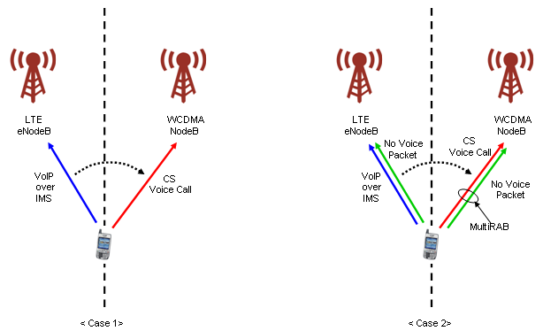
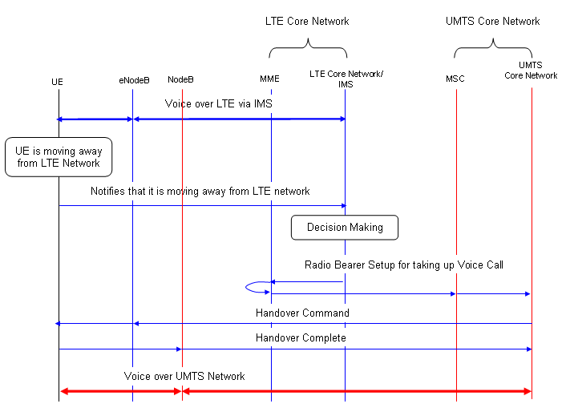

|
LTE Quick Reference Go Back To Index Home : www.sharetechnote.com |
|
|
SRVCC(Single Radio Voice Call Continuity)
SRVCC stands for Single Radio Voice Call Continuity. Putting it simple, it is a Handover technology between "VoIP over IMS in LTE" and Voice Call (CS) in a legacy system (e.g, WCDMA). It means it is for Handover between a Packet call in LTE and a Circuit Call in a legacy system (WCDMA). The simplest use model can be illustrated as in < Case 1 > of the following figure showing the SRVCC between LTE and UMTS (The detailed mechanism would vary depending on what kind of legacy technology is involved). A little bit complicated use-model can be illustrated as in < Case 2 >. In < Case 2 >, user is doing VoIP while he is using another packet transaction (e.g, email, browsing etc). In this case, the radio bearer on WCDMA side should be a multiple Radio Bearer (CS + PS). There may be many different type of use model as well. 
Overall procedure of SRVCC can be illustrated as follows. This is not the exact message sequence. This is just to give you a big picture of the flow. The exact sequence flow would vary depending on what kind of legacy technology gets involved.

Then you may ask "Why do we need this kind of technology when we already have Voice implementation in our LTE Network ?". Let's think about this kind of situation. A network operator has UMTS network covering all of its territory and it just started deploying LTE. But LTE deployment is not complete yet to cover the whole territory. Now a subscriber started voice call via IMS in the area with LTE network. And the it starts moving out of the LTE coverage. What would happen ? If the simplest possibility would be that the call would drop. But if the area is still strongly covered by a UMTS network, you can have another option than dropping the call. If you can hand the voice call over to the UMTS network, you can maintain the call even when you get out of the LTE network. This is a major motivation for SRVCC. Of course, different network opertor may have different motivation.
|